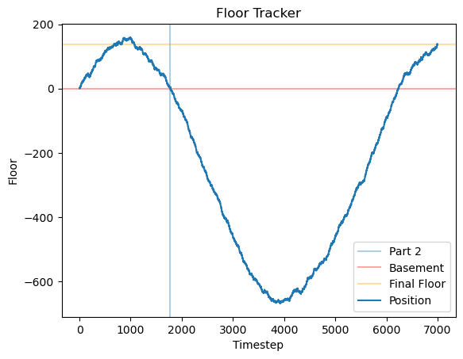

A slow solution of Advent of Code 2015. The following is a write up of how to solve and the things I learned while doing so - look at the AOC reddit site for ninja level solutions.
I am trying to
code in a readable fashion, avoiding shortcuts (easier said then done!)
First up, I’m importing all the libs I’ll use up here:
Code
# python essentialsimport osimport reimport hashlibimport mathfrom pathlib import Pathfrom typing import List, NamedTuplefrom collections import defaultdict, namedtuple, Counter# useful external libs#import numpy as npimport pandas as pd# misc utilsimport requests#from tqdm.notebook import trange, tqdm # progress bars for slow funcs#from functools import reduce # for plots, cause visualsimport matplotlib.pyplot as plt # goto python viz lib#import seaborn as sns # prettify matplotlibfrom IPython.display import display, Markdown# javascript plotting for interactive graphs#import altair as alt#import plotly.express as px
Some helper functions to avoid rewriting the same code for all the problems:
Code
def get_input(day:int=1, path="inputs"):try:return (Path() /f"{path}/{day}.txt").read_text().strip()except:print(f"Failed to load {day}.txt from `inputs` subdir.")def printmd(txt): display(Markdown(txt))
Day 1: Not Quite Lisp
# We’re standing at a inifinite building, and following instructions:( is up, ) is down to find the right floor.
This is simple - minus the ups from the downs:
Code
in1 = get_input(1)in1.count("(") - in1.count(")")
138
A list comprehension version for kicks:
Code
sum([1if char =="("else-1for char in in1])
138
for part 2, we need to find the first time the we enter the basement while following the instructions.
Code
floor, ans =0, Nonefloors = []for i, mv inenumerate(inp1):if mv =="(": floor +=1else: floor -=1 floors.append(floor)if floor ==-1andnot ans: ans = i +1 printmd(f"First reached the basement at timestep: **{i +1}**")#break # no need to continue climbingplt.title("Floor Tracker"); plt.xlabel("Timestep"); plt.ylabel("Floor")plt.axvline(x=ans, label="Part 2", alpha=0.35)plt.axhline(y=-1, label="Basement", color="red", alpha=0.35)plt.axhline(y=138, label="Final Floor", color="orange", alpha=0.35)plt.plot(range(len(floors)), floors, label="Position")plt.legend(loc="lower right");
First reached the basement at timestep: 1771

Day 2: I Was Told There Would Be No Math
How much wrapping paper is needed to wrap a bunch of presents? We need 2*l*w + 2*w*h + 2*h*l paper, and the input is the l, w and h of each present.
In the bad old days of programming, this would be the perfect place to represent the data as a list or tuple in the form [3 ,3, 9] representing [l, w, h]. But now we can use namedtuples to make it easier to understand the data, and also it makes it easier to add more info, e.g type of paper used, cost etc:
Code
class Present(NamedTuple): l: int w: int h: intdata2 = [Present(*[int(x) for x in i.split("x")]) for i in get_input(2).split("\n")]data2[:4]
def get_present_area(p: Present) ->int: box_area =sum([2*p.l*p.w, 2*p.w*p.h, 2*p.h*p.l]) extra_paper = math.prod(sorted(p)[:2])return box_area + extra_papersum([get_present_area(x) for x in data2])
1586300
Now we need to calcuate the ribbon required, which is equal to the perimeter of the smallest face + cubic volume of the present
Code
def ribbon(present: Present) ->int:"""takes in present, returns length of ribbon needed to wrap""" l, w, h =sorted(present)return2*l +2*w + l*w*hsum([ribbon(present) for present in data2])
3737498
Day 3: Perfectly Spherical Houses in a Vacuum
# Santa is delivering presents to houses, and his movements is 1 step at a time: north (^), south (v), east (>), or west (<)
Code
inp3 = get_input(3)dirs = {"^": (0,1), ">": (1,0), "v": (0,-1), "<": (-1, 0)}def get_moves(data): moves = [(0,0)] # starting pointfor mv in data: x, y = moves[-1] # x,y of current pos xx, yy = dirs[mv] moves.append((x + xx, y + yy))return movesmoves = get_moves(inp3)c = Counter(moves)printmd(f"Santa visited **{len(c)}** unique places.")x, y =zip(*moves)f, ax = plt.subplots(figsize=(10,6))plt.title(f"Santa visited {len(c)} unique places in {len(moves)} visits")ax.plot(x,y, alpha=0.7, label="Santa's Movements"); ax.legend();
Santa visited 2565 unique places.
for part 2, we have two santas! They move alternatingly, so we can say Santa_1 does all the odd moves and Santa_2 does all the even moves:
Code
santa_1 = get_moves(inp3[::2]) # all the odd movessanta_2 = get_moves(inp3[1::2]) # all the even movestwo_santas = Counter(santa_1 + santa_2)printmd(f"The two santas visited **{len(two_santas)}** unique places.")f, ax = plt.subplots(figsize=(10,6))plt.title(f"the two santas visited {len(two_santas)} unique places")for name, santa inzip(("Bob", "Alice"), (santa_1, santa_2)): x, y =zip(*santa) ax.plot(x,y, alpha=0.8, label=f"Santa_{name}")ax.legend();
def day_4_1(inp=inp4, s="None", target="00000", i=0) ->int:whilenot s.startswith(target): i +=1 txt = inp +str(i) s = make_hash(txt) printmd(f"_{inp}_ target at position **{i:,}** ({s})")return iassert day_4_1("abcdef") ==609043# tests are always a good ideaassert day_4_1("pqrstuv") ==1048970day_4_1()
abcdef target at position 609,043 (000001dbbfa3a5c83a2d506429c7b00e)
pqrstuv target at position 1,048,970 (000006136ef2ff3b291c85725f17325c)
bgvyzdsv target at position 254,575 (000004b30d481662b9cb0c105f6549b2)
254575
Part two just changes the target sring to have one more zero so thanks to making part one a function this is easy:
Code
day_4_1(target="000000")
bgvyzdsv target at position 1,038,736 (000000b1b64bf5eb55aad89986126953)
1038736
Day 5: Doesn’t He Have Intern-Elves For This?
# We have a list of strings, and Santa has the following rules to figure out which ones are nice:
at least three vowels (aeiou only), like aei, xazegov, or aeiouaeiouaeiou.
at least one letter that appears twice in a row, like xx, abcdde (dd), or aabbccdd (aa, bb, cc, or dd).
does not contain the strings ab, cd, pq, or xy, even if they are part of one of the other requirements.
Code
vowels ="aeiou"# need vowelsbad_strings = ["ab", "cd", "pq", "xy"] # don't want theseregex = re.compile(r"([a-zA-Z])\1{1,}") # search for 2+ letters in a rowtest4 = ["ugknbfddgicrmopn", "aaa", "jchzalrnumimnmhp", "haegwjzuvuyypxyu", "dvszwmarrgswjxmb"]def is_nice_string(txt): vowel_count =len([char for char in txt if char in vowels]) >=3 two_chars =len(re.findall(regex, txt)) >0 no_bad_str =Trueif (sum([s3d in txt for s in bad_strings]) ==0) elseFalsereturn vowel_count and two_chars and no_bad_str[is_nice_string(t) for t in test4] #== [False, False, True, True, True]
[True, True, False, False, False]
Code
inp5 = get_input(5).split("\n")print("Number of nice strings: ", sum([is_nice_string(t) for t in inp5]))
Number of nice strings: 258
for part two, the rules have changed, a nice string has these properties:
It contains a pair of any two letters that appears at least twice in the string without overlapping, like xyxy (xy) or aabcdefgaa (aa), but not like aaa (aa, but it overlaps).
It contains at least one letter which repeats with exactly one letter between them, like xyx, abcdefeghi (efe), or even aaa.